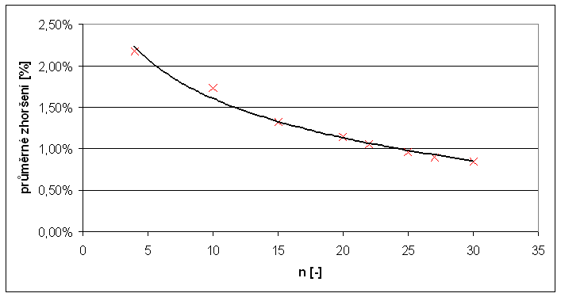
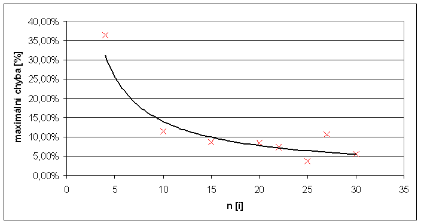

Zad�n�
- Naprogramujte �e�en� 0/1 probl�mu batohu hrubou silou. Na zku�ebn�ch datech pozorujte z�vislost v�po�etn�ho �asu na n.
- Naprogramujte �e�en� 0/1 probl�mu batohu heuristikou podle pom�ru cena/v�ha. Pozorujte
- z�vislost v�po�etn�ho �asu na n. Grafy jsou v�t�ny (i pro exaktn� metodu).
- pr�m�rn� zhor�en� proti exaktn� metod�
- maxim�ln� relativn� chybu. Absolutn� chyba nic ne��k�!
Definice probl�mu
- Je d�no:
- cel� ��slo n (po�et v�c�)
- cel� ��slo M (kapacita batohu)
- kone�n� mno�ina V={v1, v2, ... ,vn } (hmotnosti v�c�)
- kone�n� mno�ina C={c1, c2, ... ,cn } (ceny v�c�)
- Zkonstruujte mno�inu X={x1, x2, ... ,xn }, kde ka�d� xi je 0 nebo 1, tak, aby
- platilo: v1x1+v2x2 + ... + vnxn <= M (batoh nebyl p�et�en).
- v�raz c1x1+c2x2 + ... + cnxn nab�val maxim�ln� hodnoty pro v�echny takov� mno�iny (cena v�c� v batohu byla maxim�ln�).
Implementace
�lohu jsem implementoval v Jazyce C# jako konzolovou aplikaci. Data na��t� ze standardn�ho vstup a v�sledky vypisuje na stdandardn� v�stup. �e�en� jsem rozd�lil do 4 t��d.- Batoh.cs - Virtu�ln� t��da, m� implementovan� metody pro na��t�n� ze standardn�ho vstupu, v�pis na standardn� v�stup a virtu�ln� metodu Compute().
- BruteForce.cs - �e�en� hrubou silou, implementov�no rekurzivn�.
- GreedyProof.cs - Jednoduch� heuristika, nejprve vypo�te pom�r cena/v�ha a nastav� pomocn� pole s indexy, kter� p�edstavuj� po�ad� ve kter�m budou prvky do batohu p�id�v�ny (od nejlep��ho pom�ru).
- Program.cs - Na�te vstupn� data a vol� metodu Compute() a m��� �as.
Parametry programu
- -g jednoduch� heuristika (GreedyProof), jinak hrub� s�la (BruteForce).
- -t:count Pro m��en� �asu, ka�dou instanci opakuje count-kr�t.
Nam��en� hodnoty a v�sledky
M��il jsem na NTB s procesorem Centino 1.4GHz, nastaven� max Performance p�i nap�jen� z adapt�ru. Pou�it� OS: Windows XP SP2 s .net Framework 2.
Tabulka v�sledk� m��en�
Proto�e rozli�en� ��ta�e (Environment.TickCount) je 16 ms, je nutn� instance spo��tat v�cekr�t a v�sledn� �as z�skat vyd�len�m po�tem opakov�n�. Pro m��en� �asov� slo�itosti hrub� s�ly jsem experiment�ln� nastavoval po�et opakovan� od 100 000 (pro n = 4) do 1 (pro n = 30). Pro m��en� heuristiky jsem nastavil 100 000 opakov�n� pro ka�dou instanci probl�mu.
| n | hrub� s�la [ms] | heuristika [ms] | IDmax. chyby | prum. zhor�en� | max. chyba |
|---|---|---|---|---|---|
| 4 | 0,0075 | 0,0071 | 9037 | 2,17% | 36,36% |
| 10 | 0,044 | 0,015 | 9080 | 1,73% | 11,48% |
| 15 | 1,229 | 0,021 | 9126 | 1,32% | 8,54% |
| 20 | 36,865 | 0,027 | 9165 | 1,14% | 8,43% |
| 22 | 136,736 | 0,030 | 9237 | 1,05% | 7,23% |
| 25 | 1140,04 | 0,034 | 9283 | 0,96% | 3,68% |
| 27 | 4803,9 | 0,036 | 9338 | 0,90% | 10,60% |
| 30 | 38723,1 | 0,041 | 9380 | 0,85% | 5,51% |
Graf: �asov� z�vislost

Graf: Z�vislost pr�m�rn� chyby na velikosti instance

Graf: Z�vislost maxim�ln� chyby na velikosti instance

Z�v�r
�e�en� hrubou silou d�v� sice nejlep�� mo�n� �e�en�, ale dan� za prohled�n� cel�ho stavov�ho prostoru je ne�nosn� (exponenci�ln�) �asov� slo�itost. P�ekvapuj�c� jsou pom�rn� dobr� v�sledky jednoduch� heuristiky. �asov� z�vislost je line�rn� (obsahuje velkou multiplikativn� konstantu, tak�e pro mal� n se neprojev� slo�itost �azen� n.log(n)) a dosahuje pr�m�rn� chyby v nejhor��m p��pad� 2,17% pro zadan� instance. Z grafu je dob�e patrn�, �e pr�m�rn� relativn� chyba s velikost� instance kles�.